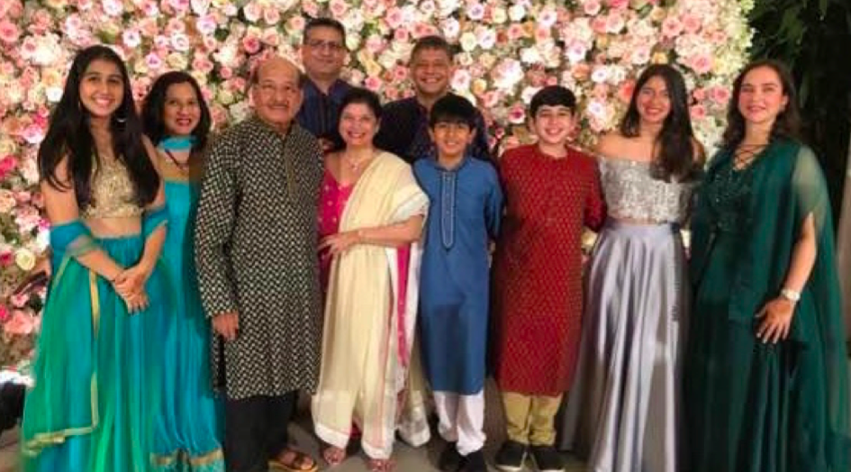

"Jeet was born on the 28th of November, 2003 in a small but cozy hospital room in a well-known hospital named Samitivej in Bangkok , Thailand. He was given birth to just nine days after his cousin sister, which is why they are always regarded as twins. Thought he is an Indian , he has never lived there, as for the first one and a half years of his life, he lived in Jakarta , Indonesia, enjoying life as a baby. Furthermore, in 2005, when he was not even 2 years old, his family decided to move to Guangzhou , China where not only did the next chapter of his life began, but it is where he is still living to this day."
Though Jeet does not remember much of the moving process, he does remember the wonderful school he got enrolled to just couple months after moving. It was his first school of his schooling career, and it was a Chinese kindergarten. There he learned Chinese in school, and was being taught English at home. After just a few years, Jeet was relocated to the same school his sister was currently attending called Utahloy International School of Guangzhou, and little did he know that USIGZ was going to be his home for the next 10 years. Though many of the teachers and friends left over the years, he will always rember the bond he founded and will cherish the memories made forever.
Jeet has a small family, consisting of only 4 people. His sister is 19 years old and is a junior studying at the University of Southern California (USC). His dad and mom both live with him, and work together in an exporting company. He is close with his grandparents and with his aunt and uncle on his dad's side, as well as their kids (his 2 first cousins). His dad's family live in Bangkok, whilst his mom's live in Mumbai.
